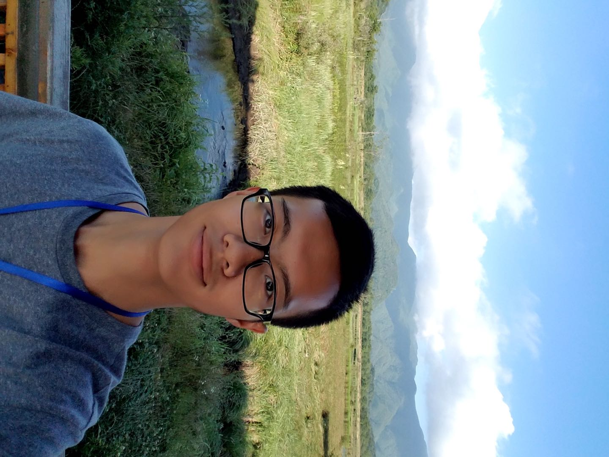

Qiushi YangPh.D. Student
Department of Electrical Engineering,
|
 |


About Me
I am a first-year Ph.D student in the Department of Electrical Engineering, City University of Hong Kong, supervised by Prof. Yixuan YUAN. Before that, I received the B. Eng degree from School of Computer Science and Engineering in Northeastern University of China in 2019.
My research interests lies on computer vision and machine learning, with a focus on medical image analysis, semantic segmentation and image recognition.
If you would like to chat with me about any interesting topics or questions on computer vision related, please don't hesitate to contact with me via email!
News
Being waiting for new papers...
Publications
-
Detection of Rail Surface Defects Based on CNN Image Recognition and Classification
Lidan Shang, Qiushi Yang, Jianing Wang, Shubin Li, Weimin Lei.
IEEE International Conference on Advanced Communications Technology (ICACT 2018), Korea.
Experience
- Meituan-Dianping, Auto-Driving Group, Beijing, Feb. 2020 - Jul. 2020
Research Intern
Advisor: Prof. Mingyu Fan
- Westlake University, Hangzhou, Zhejiang, Aug. 2019 - Nov. 2019
Research Assistant
Advisor: Prof. Stan Z. Li
- Horizon Robotics, AIoT Group, Beijing, Jan. 2019 - Apr. 2019
Research Intern
Advisor: Mengjia Yan
Selected Awards
Northeastern University Outstanding Student Scholarship, 2016-2017
1st-Level Prize on National Mathematic Contest in Liaoning for Undergraduate Students, 2016